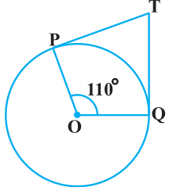
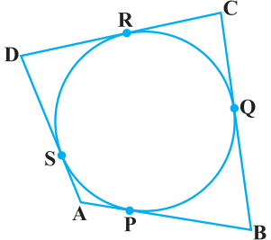
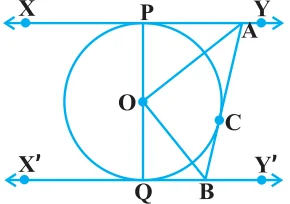
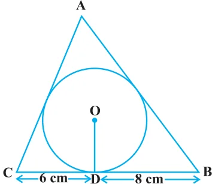

EXERCISE 10.2
In Q.1 to 3, choose the correct option and give justification.
- 1.From a point Q, the length of the tangent to a circle is 24 cm and the distance of Q from the centre is 25 cm. The radius of the circle is
- (A)7 cm
- (B)12 cm
- (C)15 cm
- (D)24.5 cm

- 2.In Fig. 10.11, if TP and TQ are the two tangents to a circle with centre O so that \(\angle \text{POQ} = 110^{\circ}\), then \(\angle \text{PTQ}\) is equal to
- (A)\(60^{\circ}\)
- (B)\(70^{\circ}\)
- (C)\(80^{\circ}\)
- (D)\(90^{\circ}\)
- 3.If tangents PA and PB from a point P to a circle with centre O are inclined to each other at angle of \(80^{\circ}\), then \(\angle \text{POA}\) is equal to
- (A)\(50^{\circ}\)
- (B)\(60^{\circ}\)
- (C)\(70^{\circ}\)
- (D)\(80^{\circ}\)
- 4.Prove that the tangents drawn at the ends of a diameter of a circle are parallel.
- 5.Prove that the perpendicular at the point of contact to the tangent to a circle passes through the centre.
- 6.The length of a tangent from a point A at distance 5 cm from the centre of the circle is 4 cm. Find the radius of the circle.
- 7.Two concentric circles are of radii 5 cm and 3 cm. Find the length of the chord of the larger circle which touches the smaller circle.
- 8.A quadrilateral ABCD is drawn to circumscribe a circle (see Fig. 10.12). Prove that AB + CD = AD + BC


- 9.In Fig. 10.13, XY and X′Y′ are two parallel tangents to a circle with centre O and another tangent AB with point of contact C intersecting XY at A and X′Y′ at B. Prove that \(\angle \text{AOB} = 90^{\circ}\).
- 10.Prove that the angle between the two tangents drawn from an external point to a circle is supplementary to the angle subtended by the line-segment joining the points of contact at the centre.
- 11.Prove that the parallelogram circumscribing a circle is a rhombus.

- 12.A triangle ABC is drawn to circumscribe a circle of radius 4 cm such that the segments BD and DC into which BC is divided by the point of contact D are of lengths 8 cm and 6 cm respectively (see Fig. 10.14). Find the sides AB and AC.
- 13.Prove that opposite sides of a quadrilateral circumscribing a circle subtend supplementary angles at the centre of the circle.